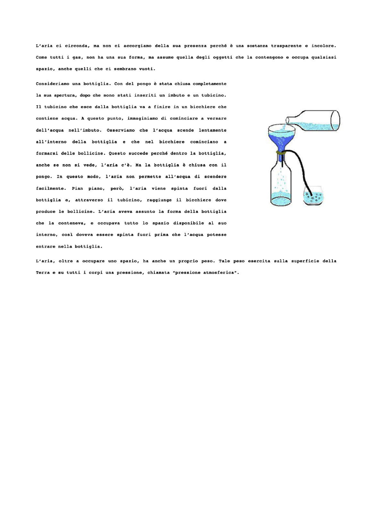
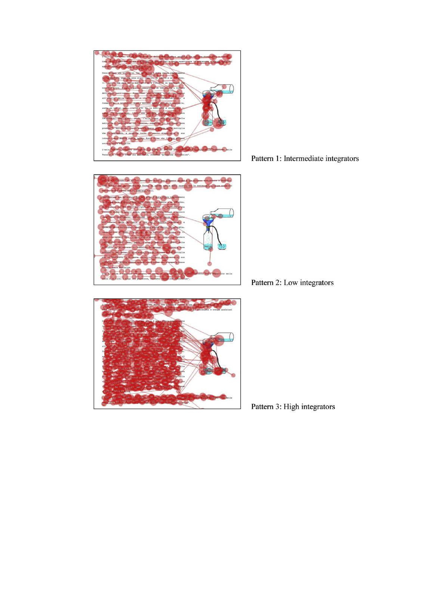

Do fourth graders integrate text and picture in processing and learning from anillustrated science text? Evidence from eye-movement patterns
Lucia Mason
*
, Maria Caterina Tornatora, Patrik Pluchino
Department of Developmental Psychology and Socialization, University of Padova, Via Venezia 8, 35131 Padova, Italy
article info
Article history:
Received 18 April 2012
Received in revised form
14 July 2012
Accepted 17 July 2012
Keywords:
Text processing
Eye movements
Text and picture comprehension
Learning from text
Comprehension of science text
abstract
This study used eye-tracking methodology in the school setting to examine fourth graders’ online pro-
cessing of text and graphics while reading an illustrated science text. We were interested in identifying
patterns of visual behavior, which was examined considering individual differences in reading
comprehension, prior knowledge, and spatial ability. We also investigated the outcomes of learning from
text by measuring free recall, factual knowledge, and transfer of knowledge. For an important
advancement of research in this area, the link between processing and learning was also examined.
Forty-nine 4th graders participated in a pretest, immediate, and delayed posttest design. Results of
a cluster analysis using indices of first- and second-pass eye-fixation, as well as integrative saccades
revealed three patterns of visual behavior varying for the level of integration of text and picture.
Significant associations between eye-tracking data and reading comprehension and prior knowledge
emerged. Moreover, the three patterns of visual behavior were significantly related to students’
performances in the various learning tasks at both testing times. The greater integrative processing of the
illustrated text was associated with higher learning performances. The significance of the study for
educational implications is outlined.
Ó 2012 Elsevier Ltd. All rights reserved.
1. Introduction
From the last years of primary school, text is the main medium through which students acquire disciplinary concepts. Successful text
comprehension is therefore essential for learning in the various subject areas (Alexander & Fox, 2008; Broughton & Sinatra, 2010; Otero,
León, & Graesser, 2002; Sinatra & Broughton, 2011). Most informational texts that students have to comprehend include various types of
instructional illustration, especially in science education. Successful comprehension of the multimedia learning material that is usually
presented in science textbooks and websites requires comprehension of verbal and graphical information.
Studies of text and picture comprehension, which have flourished in the last two decades, are mainly focused on outcomes. Investi-
gations focused on online cognitive processing for comprehension of an illustrated text are therefore necessary to further our under-
standing, at least to some extent, of the reasons underlying unsuccessful learning performances from text reading and picture inspection.
This understanding may be particularly significant to the practical implications about how to improve text and graphics comprehension
through effective processing in the real context of the classroom.
The present study is based on eye-tracking methodology in the school setting. To date, this methodology has been extensively used in
psychological research, for example to examine reading processes (e.g. Hyönä, Lorch, & Rinck, 2003; Rayner, Chace, Slattery, & Ashby, 2006),
face recognition processes (e.g. Stacey, Walker, & Underwood, 2005), or visual search processes (e.g. Shen, Reingold, & Pomplun, 2000).
However, this methodology has been rarely used in educational research until recently, when it begun to receive increased attention in
studies on learning from science text (Ariasi & Mason, 2011; Mikkilä-Erdmann, Penttinen, Anto, & Olkinuora, 2008), learning from multiple
representations (Hyönä, 2010; Mayer, 2010; van Gog & Scheiter, 2010), and science problem solving (Tsai, Hou, Lai, Liu, & Yang, 2012).
Nevertheless, almost all the existing research has been conducted with college students (e.g. Johnson & Mayer, in press) and very little
attention has been paid to younger learners.
*
Corresponding author. Tel.: þ39 049 8276562; fax: þ39 049 8276511.
E-mail addresses: lucia.mason@unipd.it (L. Mason), caterina.tornatora@unipd.it (M.C. Tornatora), patrik.pluchino@unipd.it (P. Pluchino).
Contents lists available at SciVerse ScienceDirect
Computers & Education
journal homepage: www.elsevier.com/locate/compedu
0360-1315/$ – see front matter Ó 2012 Elsevier Ltd. All rights reserved.
http://dx.doi.org/10.1016/j.compedu.2012.07.011
Computers & Education 60 (2013) 95–109

The present study is not only focused on the processing of illustrated science text in primary school children, but also on various levels of
their learning from text. In particular, the link between online processes during reading and offline outcomes of reading is examined for
a new contribution to the research field. For the theoretical foundation of the study, relevant issues of research on text and picture
comprehension and on eye-movement analysis to study cognitive processing are reviewed in the next sections.
1.1. Comprehension of text and picture
As research has documented, reading comprehension implies the activation of complex cognitive processes, which occur at both the
lower level of information processing, for instance decoding, and at higher levels of information processing, for instance inference
generation, to construct meaning from text (McNamara & Magliano, 2009; Sinatra & Broughton, 2011). Several models have been proposed
to describe and explain how reading comprehension occurs (e.g. van den Broek, Risden, Fletcher, & Thurlow, 1996; Kintsch, 1998; Kintsch &
van Dijk, 1978). However, a review of these models is beyond the aims of this paper. We should instead point out what is emphasized in all
the prominent models of reading comprehension.
The common issue shared by all models is the constructive role of the reader who activates her or his relevant background knowledge as
she or he processes text information, and tries to integrate background knowledge with the new information to build a coherent repre-
sentation of the text, that is, the situational model in Kintsch’s (1998) terms.
When textbooks or websites, especially in the domain of science that is pertinent to this study, include various kinds of instructional
illustration in the form of diagrams, graphs, photographs, etc., successful comprehension of the presented material requires comprehension
of both verbal and graphical information.
Research has investigated the potential benefits of multiple external representations when learning complex concepts (Ainsworth, 1999,
20 06; Dunsworth & Atkinson, 2007). It has been documented that pictures enhance students’ learning from text (see Carney & Levin, 2002,
for a review). Regarding science learning, especially at elementary and middle school levels, visualizations play a crucial role as they can
make unseen and complex processes visible (Kali & Linn, 2008). However, research has also indicated that it is not always true that “a picture
is worth a thousand words” (Mayer & Sims, 1994).
What does comprehension of an illustrated text require? Mayer’s (2005, 2009) cognitive theory of multimedia learning (CTML) offers
a shared account. Moving from the assumptions of dual coding theory, Mayer (2005, 2009) outlined the multimedia principle, the first of
a series of principles that describe the circumstances under which individuals learn better from words and images rather than from words
alone. As posited by Paivio’s (1986) dual coding theory, verbal and pictorial information are processed by different subsystems, that is,
a verbal system for the former (words and sentences) and an imagery system for the latter (pictures). The overall multimedia learning
procedure relies on some crucial processes that must be activated: selection, organization, and integration processes. The former refer to the
selection of relevant words and pictures for further processing in working memory. Organization processes form a coherent text-based
model from the selected words and a coherent picture-based model from the selected images. In a one-to-one mapping process, these
models must then be integrated. The integration process, which also involves the role of prior knowledge activated from long-term memory,
requires that the two models are mentally available at the same time.
In his integrated model of text and picture comprehension, Schnotz (2002, 2005) elaborated Mayer’s theory and applied dual coding to
the processing of both pictures and texts. Structural mapping processes are essential to the formation of a coherent mental model of an
illustrated text from the continuous interactions between the propositional representation and the mental model, both in text and in picture
comprehension.
It should be emphasized that the multimedia principle (Mayer, 2005, 2009) implies the integration of information provided by texts with
information provided by pictures (
Ainsworth, 2006; Schno
tz & Bannert, 2003). Successful comprehension of an illustrated text relies,
therefore, on meaningful integrative connections between verbal and graphical features. In order to provide evidence of the theoretical
assumptions of the multimedia principle, empirical research does not only need to investigate such online integrative processing of different
representations, but also its relations with offline learning performance.
1.2. Eye tracking for a process approach to the study of the multimedia principle
Almost all studies on processing and learning from informational texts have adopted the thinking-aloud methodology through which
rich data can be collected (see Fox, 2009, for a review). However, it is also intrusive and can alter the process of thinking itself, since cognitive
resources are diverted from the execution of the primary task (Veenman, Van Hout-Wolters, & Afflerbach, 2006). An alternative method-
ology that allows the processing of verbal and graphical representations to be tracked is the eye-tracking methodology. It provides
quantitative and objective measurement of visual behavior while reading (Rayner, 1998, 2009). It is therefore useful to shed light on the
process of text and picture integration during learning, which is the basis of the multimedia principle.
Two theoretical assumptions about the relation between eye movement and cognitive processing underlie this methodology: The
immediacy assumption and the eye-mind assumption (Just & Carpenter, 1980). According to the immediacy assumption, information
processing is not postponed, but takes place while the information is encountered, regardless of the level on which it may occur. According
to the eye-mind assumption, visual information that is currently being observed is processed, as the direction of human gaze is closely
linked to the focus of attention. Eye movements can therefore be used legitimately to trace information processing at the discourse level
while reading. This methodology has been used extensively in cognitive psychology to study reading behavior, especially lexical access and
syntactic parsing (Rayner, 1998, 2009). Hyönä et al. (2003) have indicated that eye tracking is useful in the study of global text processing,
which refers to processes that identify relationships between segments of information that are not adjacent and can span relatively long
distances in a text. Global text processing is of particular interest to the present study on learning from an illustrated text.
To our knowledge, several eye-tracking studies have involved college students to contribute to unveiling global text and picture pro-
cessing (e.g. Hegarty & Just, 1993; Johnson & Mayer, in press; Ozcelik, Karakus, Kursun, & Cagiltay, 2009; Sanchez & Wiley, 2006), or problem
statement and picture processing in solving an image-illustrated multiple-choice science problem (Tsai et al., 2012). However, only a very
few studies have involved younger learners. In the study carried out by Hannus and Hyönä (1999), 10-year-old students differing for
L. Mason et al. / Computers & Education 60 (2013) 95–10996
intellectual ability had to learn authentic biology textbook materials. Data about eye fixations revealed that comprehension was largely
driven by the text as the readers only paid marginal attention to the pictorial representations, which were differentiated as pertinent and
less pertinent. However, high-ability students were more strategic, as readers spent relatively more time on pertinent segments of the
verbal and visual material (experiment 2). In the study carried out by She and Chen (2009), seventh graders learned about the mitosis and
meiosis processes at a molecular level through multimedia materials presented with animation or simulation and with narration or on-
screen text. Data of participants’ eye-movement behavior showed a correlation between the duration of eye fixations and the depth of
learning. In one of our previous studies (Mason, Pluchino, Tornatora, & Ariasi, in press), eleventh graders’ visual behavior during reading was
monitored in three reading conditions: text only, text with a concrete illustration, and text with an abstract illustration in a pretest,
immediate, and delayed posttest design. Eye-fixation data revealed that the abstract illustration promoted more efficient processing of the
text. Analyses of the gaze shifts between the two types of external representation indicated that the readers of the text with the abstract
illustration made a greater effort to integrate verbal and pictorial information.
In the present study we investigated young learners’ cognitive processing during the reading of an illustrated science text. In order to
describe it better, we considered not only the basic indices of eye fixations, that is, the total fixation time on text and picture (see below “Eye-
tracking data” section), but we also made a distinction between the two finer-grained indices of the first-pass fixation time and the second-
pass fixation time (Hyönä et al., 2003; Hyönä & Nurminen, 2006). We also considered the eye movements (saccades) from the verbal to the
graphical representation and vice versa. Table 1 reports the eye-tracking measures that we considered to describe various aspects of
participants’ cognitive processing of text and picture during the learning episode.
The top two measures in Table 1 are the first-pass fixation time on text and the first-pass fixation time on picture. They tap the total duration
of fi xations on the verbal and graphical representations, respectively, during the initial reading or inspection and before exiting them. These
measures of first-pass include both forward fixations and backward fixations, and are considered to reflect the learners’ selective attentional
focus while initially processing material. They may reflect laborious processing or a breakdown in comprehension when they include long
regressions.
The third measure in Table 1 is the look-from text to text fixation time, which describes the total duration of the regressive fixations on
a text segment while re-reading another text segment. This index reflects
readers’ integrative processing within the verbal representation.
The fourth measure in Table 1 is the total number of integrative transitions, that is, the number of times in which the learner’seyefixation
moves from a text segment to the picture or from the picture to a text segment. Integrative transitions reflect the learner’s attempts to
integrate words and pictorial elements (Johnson & Mayer, in press).
The last two measures in Table 1 describe the total time spent on integrative processing of text and pictorial elements. Specifically, the
look-from text to picture is the total duration of all regressive fixations on the picture while re-reading a text segment. The look-from picture to
text is the total duration of all regressive fixations on the text while re-inspecting the picture. We considered these look-from fixation times
as indices that reflect integration across the verbal and graphical representations during the learning episode. The integrative transitions
indicate the number of learner’s eye movements (saccades) from one representation to the other as attempts to integrate text and graphics.
The look-from text to picture and from picture to text fixation times indicate how long the attentional focus remains on the picture after
a gaze shift from the text, or the attentional focus is on the text after a gaze shift from the picture.
Following Hyönä, Lorch, and Kaakinen (2002), we used the “look-from” fixation time index as a measure of the duration of integrative
processing as it takes into consideration both the origin and destination of regressive fixation durations. In other words, the look-from
measures provide an index of the extent to which a text segment is used as an “anchor point” for processing the illustration or other
text segments (Hyönä & Lorch, 2004), or the illustration is used as an “anchor point” for processing text segments, which is crucial for
integrating the two parts.
The indices of the first-pass are considered to reflect the initial processing of the learning material. The indices of the second-pass are
considered to reflect the reader’s more intentional and strategic processing. The assumption is that integration may occur after a reader has
explored the learning material during the earlier processing and then makes correspondences between the relevant elements in the verbal
and graphical representations (Schlag & Ploetzner, 2011). However, the reader’s integrative efforts are not necessarily successful.
1.3. Testing of individual characteristics in text processing
Visual behavior during science text reading, which reflects its processing, may be related to individual differences. As mentioned before,
the available literature on processing informational texts mainly includes thinking-aloud studies (Fox, 2009). Based on this literature, which
only partly refers to primary school students, we took into account three learner characteristics that may influence scientific
text processing:
Prior knowledge of the topic, reading comprehension ability, and spatial ability.
Table 1
Eye-tracking measures of cognitive processing during learning.
Name Description Cognitive processes
First-pass fixation time on text Total duration of all fixations on text segments during
the initial reading and before exiting from them
Selecting: Attentional focus on words
First-pass fixation time on picture Total duration of all fixations on the picture during
the initial exploration and before exiting from it
Selecting: Attentional focus on pictorial elements
Look-from text to text fixation time Total duration of all regressive fixations on a text
segment while re-reading another text segment
Integrating: Integration of text segments
Integrative transitions Total number of times the eye fixation is moved
from the text to the picture and vice versa
Integrating: Attempts to integrate words
and pictorial elements
Look-from text to picture fixation time Total duration of all regressive fixations on the
illustration while re-reading a text segment
Integrating: Integration of words and pictorial elements
Look-from picture to text fixation time Total duration of all regressive fixations on the
text while re-inspecting the illustration
Integrating: Integration of words and pictorial elements
L. Mason et al. / Computers & Education 60 (2013) 95–109 97

Prior knowledge of the topic may vary dramatically among readers of scientific texts. Empirical research has clearly indicated the role of
readers’ preexisting knowledge of the outcomes of learning from texts (McNamara & Kintsch, 1996; Otero et al., 2002; Ozuru, Dempsey, &
McNamara, 2009). In particular, research on conceptual change has widely documented that readers’ preexisting knowledge may comprise
alternative conceptions about scientific phenomena or events (e.g. Carey, 2005; Chi, Slotta, & de Leeuw, 1994; Vosniadou, 1994). Inaccurate
mental representations may act as a barrier to the construction of an appropriate situational model from text for readers who hold them
(Sinatra & Mason, 2008). More specifically, if the activated prior knowledge includes misconceptions, conceptual change or knowledge
revision is therefore required for the reader to form a high quality mental model of the text information (Sinatra & Broughton, 2011).
Particularly pertinent here is that at various age levels empirical studies have also revealed that readers’ preexisting knowledge influ-
ences cognitive processing of reading (Afflerbach, 1990; Coté & Goldman, 1999; Wolfe & Goldman, 2005). In addition, process-oriented
research on conceptual change induced by text reading has shown that more knowledgeable readers with correct background knowl-
edge of the topic are facilitated in processing the learning material and integrating it into their conceptual structures. In contrast, readers
possessing lower topic knowledge, which is made up of alternative conceptions, are disadvantaged in processing and learning new
information (Broughton, Sinatra, & Reynolds, 2010; Kendeou & van den Broek, 2005, 2007; Sinatra & Broughton, 2011).
As described below (see 3.2.), the topic introduced in the learning material of the present study regards air. Research in science teaching
has revealed that primary school children commonly hold alternative conceptions about air (e.g. Brook & Driver, 1989). They include the idea
that air is not a substance: “You do not see it, you do not feel it. Even if you get it, you do not have anything”. Therefore, air does not occupy
space and has no weight. Air is instead strongly associated with air movement, thus “air does nothing” when not in motion. We expected to
find that fourth graders would hold the misconception that air is not a substance. It was therefore essential to take into account the role of
participants’ prior knowledge of the topic. In terms of eye-tracking data, lower initial knowledge including alternative conceptions of the
topic may be associated with less strategic reading behavior of an illustrated science text, as reflected in shorter look-from fixation times for
integrated processing within and across representations of the learning material.
We also considered students’ reading comprehension ability. Although at higher grades, research has documented that in the domain of
science reading comprehension ability correlates with performance as measured by the Program of International Student Assessment (PISA)
(Cromley, 2009). Reading comprehension of scientific texts also correlates with academic achievement in science (Cromley, Snyder-Hogan,
& Luciw-Dubas, 2010). Differences in processing as a function of reading comprehension ability have emerged for various aspects of the
constructive activity of reading, such as goal setting and pursuit, use of strategies, and monitoring (Linderholm & van den Broek, 2002;
Martin, 1988; Schellings,
Aarnoutse, & van Leeuwe, 2006). Eye-tracking data can reveal the role of reading comprehension ability through
the distinction between first- and second-pass reading. It is especially during the first pass reading that problematic processing can emerge
(Rayner et al., 2006). A longer fixation time during the first encounter with a text is associated with comprehension difficulties.
Finally, we examined readers’ spatial ability. This ability has been investigated in many visualization studies (Hegarty & Kriz, 2008;
Kozhevnikov, Motes, & Hegarty, 2007). College students’ eye movements in relation to spatial ability were investigated in a study of
comprehension of kinematics graphs. High-spatial students fixated longer and repeatedly the graph elements, such as axes, axis labels, and
line segments (Kozhevnikov et al., 2007, experiment 3). According to a recent meta-analytic review of the literature (Höffler, 2010), spatial
ability is an important factor to consider in learning from visualizations, which can be compensated by the features of the latter. Students
with low spatial ability are better supported by a dynamic instead of a non-dynamic illustration and by 3d- instead of 2d-visualizations.
However, a more recent study carried out by Höffler and Leutner (2011) has indicated that spatial ability is also necessary in order to
construct mental manipulations or spatial visualizations of a series of static pictures. Students with low spatial ability learned less from four
static illustrations than those with high spatial ability, whereas learning from an animation was independent from spatial ability. Results
about the role of spatial ability in learning from static pictures are therefore still mixed. We took this individual difference into account since
we were interested in processing and learning from an illustrated text. Some spatial relations between objects would be described in a text
to be read by primary school learners and some spatial relations would be implied by an illustration. The verbally described and pictorially
represented spatial relations should be rather simple. Nevertheless, given the inconclusive results in the literature, we examined the
contribution of spatial ability to see whether it was related to the cognitive processing of the learning material, as reflected in the first-pass
fixation time on the illustration and in the second-pass fixation time spent backtracking to verbal information while attending the pictorial
elements, and vice versa.
2. The present study
To extend previous investigations on processing and learning from an illustrated text, we examined fine-grained indices of visual
behavior during reading. We were particularly interested in tracking the integration of verbal and pictorial information in young primary
school students through eye-movement analyses. For a significant advancement of the current research, we also sought to investigate the
link between the online processing of an illustrated science text and the offline outcomes of learning from it. The multimedia principle,
which is at the basis of the cognitive theory of multimedia learning as described above (Mayer, 2005, 2009), guided our investigation.
According to this principle, for an illustrated text to be effective it is essential that its verbal and graphical information is integrated. Once
readers have selected and organized words into a coherent verbal representation, as well as selected and organized pictures in a coherent
pictorial representation, they must integrate the two representations with each other, together with the prior knowledge activated from
long-term memory. To provide additional support for the multimedia principle through eye-tracking methodology, the following research
questions and predictions guided the study:
(1)Are different patterns of readers’ eye movements during the first- and second-pass reading identifiable during the learning episode?
(2)Are readers’ eye movements related to their individual characteristics of prior knowledge, reading comprehension ability, and spatial
ability?
(3)Is readers’ learning from and illustrated science text related to their patterns of eye movements during text reading and picture
inspection, after controlling for individual differences?
L. Mason et al. / Computers & Education 60 (2013) 95–10998

For research question 1, we expected that different patterns of visual behavior would emerge from the various indices of eye movement
during the first and second encounters with the learning material. In particular, we expected that the patterns would not differentiate for the
first-pass fixation time on the text, which would be processed substantially similarly by the readers. In contrast, the patterns would
differentiate for the first-pass fixation time on the illustration, the integrative transitions, and the look-from fixation times within and across
representations. Based on the literature documenting the importance of considering the illustrations and integrating them with the text (e.g.
Hegarty & Just, 1993), we first expected that in a more strategic pattern of eye fixations, the picture would be attended for a longer time
during the first encounter with it. We also expected that this pattern would differentiate for a higher number of integrative transitions as
attempts to connect words and pictorial elements, as well as for longer look-from text to picture and look-from picture to text fixation times
that describe the integrative processing of words and pictorial elements during text re-reading or graphics re-inspection. In addition, we
expected that the more strategic pattern of visual behavior would be featured by a longer look-from text to text fixation time for the inte-
gration of the different text parts during the more intentional re-reading.
For research question 2, we expected that eye movements would be related to readers’ individual differences. Specifically, we expected
that preexisting knowledge of the topic would be a resource for the integration of text and picture during text processing, that is, the greater
the prior knowledge, the longer the second-pass reading (look-from text to picture and look-from picture to text) that reflects integrative
processing of verbal and visual information. We also expected that the better the reading comprehension, the shorter the first-pass reading
of the text, which may reflect difficulties in processing. Moreover, regarding spatial ability, given the mixed results in the literature, we
considered the speci fic characteristics of the learning material. This material would include only one visualization and would not be
demanding in terms of spatial visualization or manipulation, which is required, for example, when the key phases of a phenomenon are
represented in a series of illustrations, like in the study by Höffler and Leutner (2011). In addition, the text should not require complex
processing of spatial information. We did not expect, therefore, that spatial ability would be significantly associated with eye movements.
For research question 3, as a major new contribution, we expected to find significant associations between indices of eye fixation during
online processing and scores of offline outcomes of learning from an illustrated science text. More precisely, referring to the explanation for
the multimedia principle (Mayer, 2005, 2009), we expected that readers showing a more integrative pattern of visual behavior – as reflected
in more integrative transitions, longer look-from text to picture and look-from picture to text fixation times – would outperform readers with
less integrative eye-movement patterns not only at a more superficial level of recall or acquisition of factual knowledge, but also at a deeper
level of transfer of knowledge.
3. Method
3.1. Participants
Initially, 56 primary school students in grade 4 were involved. They attended two public schools in a north-eastern region of Italy and
took part on a voluntary basis with parental consent. Because of poor eye calibration in 3 participants, and the absence of 4 participants at
one of the two posttests, we considered the data of 49 students (21 females and 28 males), with a mean age of 9.7 years (SD ¼ 4.7
months).
All were Caucasian native-born Italians with Italian as their first language, and shared a homogeneous middle-class social background. All
had normal or corrected-to-normal vision. Participants were involved in a pretest, immediate, and delayed posttest design.
3.2. Reading material
All participants read the same text on the topic of air, which was 219 words long (in Italian). To ensure the use of ecologically valid
material, the text was prepared by the second and third authors based on two standard Italian primary school textbooks. The text presents
the characteristics of air and then explains that there is air even when it seems that there is nothing. The text then describes a phenomenon
to explain why an empty water bottle contains air that must escape in order for water to be poured into it (see Appendix A). An illustration
depicts the phenomenon (Fig. 1).
For the eye-movement analysis, the text was divided into eight areas of interest (text segments), while the picture comprised only one
area of interest. The text and illustration were presented on the same computer screen, taking into account the spatial contiguity principle.
According to this principle, the effectiveness of multimedia learning material increases when words and pictures are physically integrated or
spatially close (e.g. Ginns, 2006, for a meta-analytical study; Johnson & Mayer, in press, for experimental studies).
3.3. Individual characteristics
3.3.1. Prior knowledge of the topic
Participants’ factual knowledge about the topic of air at pretest was assessed by five open-ended questions. According to their degree of
correctness and completeness, four answers to these questions were scored 0 to 2, and 1 question was scored 0 to 1 (maximum score 9; see
Appendix A for examples of answers and scoring). All answers were scored by the second author and an independent rater. Inter-rater
reliability, as measured by Cohen’s k for each question, ranged from .88 to 1. Each disagreement was carefully examined and discussed
until consensus was reached. Cronbach’s reliability coefficient for these questions was .62. It should be noted that although lower than
desirable, this coefficient is within the acceptable range as argued in the literature regarding the psychometric properties of scales
developed for research purposes (Nunnally, 1978).
3.3.2. Reading comprehension ability
This was measured using the MT (Italian) test for fourth grade (Cornoldi & Colpo, 1998) which consists of a text and 14 multiple-choice
questions. The expository text to be read was about pandas. The fourteen questions assessed the following components of text compre-
hension: production of semantic and lexical inferences; identification of the underlying syntactic structure; identification of figures, places,
and times; finding details; production of interpretative hypotheses; identification of the main ideas; identification of the underlying text
L. Mason et al. / Computers & Education 60 (2013) 95–109 99

structure (see Appendix A for examples of questions and answer choices). Wrong answers were scored 0, while correct answers were scored
1 (maximum score 14). Scores up to 5 suggest low comprehension skills, which need to be considered for intervention; scores 6 and 7 mean
fragile skills, which need teacher attention; scores 8 to11 mean sufficient skills; scores 12 to 14 mean solid skills (which fully meet the
criterion). Cronbach’s reliability coefficient for these questions was .71.
3.3.3. Spatial ability
This was measured using the subtest for spatial relations of the Primary Mental Ability Test (PMA, Thurstone & Thurstone, 1963), which
evaluates the ability to choose which of four options complete a given figure to form a square. It comprises 25 items (maximum score 25).
3.4. Learning measures and scoring
3.4.1. Free recall
Participants were first asked to write all that they remembered from the reading material at both posttests. This task of memory from text
was coded for two aspects. The first referred to the amount of correct information about the characteristics of air described, and was scored
0 to 4 (four characteristics were mentioned in the text). The second aspect of the coding referred to the description and explanation of the
phenomenon presented in the text and illustrated in the picture. This second aspect of recall was scored 0 to 3 according to the completeness
of the description and explanation. A total score for free recall was computed for each participant (maximum 7). All recalls were scored by
the second author and an independent rater. Inter-rater reliability, as measured by Cohen’s k for each question, ranged from .95 to 1 at
immediate posttest and from .98 to 1 at delayed posttest. Each disagreement was carefully examined and discussed until consensus was
reached.
3.4.2. Posttest factual knowledge
Participants’ knowledge about air at immediate and delayed posttest was assessed by the same five open-ended questions asked at the
pretest (see Appendix A for examples of answers and scoring), which were scored in the same way by the second author and an independent
rater. Inter-rater reliability, as measured by Cohen’s k for each question, ranged from .86 to 1 at immediate posttest and from .91 to 1 at
Fig. 1. The learning material presented on the computer screen.
L. Mason et al. / Computers & Education 60 (2013) 95–109100

delayed posttest. Each disagreement was carefully examined and discussed until consensus was reached. Cronbach’s reliability coefficients
for these questions were .70 at immediate posttest and .72 at delayed posttest.
3.4.3. Posttest transfer
At both posttests, the ability to apply knowledge to new situations or problems was measured using another five open-ended questions.
Answers to these questions were scored 0 to 2 according to their degree of correctness and completeness. In addition, since question 5 was
divided into two parts, one with a multiple choice sub-question and the other with an open-ended sub-question, a total of 3 points could be
awarded for the answer to this question (maximum score 11) by the same two raters (see Appendix A for examples of answers and scoring).
Inter-rater reliability, as measured by Cohen’s k for each question, ranged from .84 to .98 at immediate posttest and from .95 to 1 at the
delayed posttest. Each disagreement was carefully examined and discussed until consensus was reached. Cronbach’s reliability coefficients
were .72 at immediate posttest and .75 at delayed posttest.
3.5. Eye-movement measures
In the analysis of eye-movement data, fine-grained indices were computed taking into account the first-pass and second-pass fixation
times (in milliseconds), which correspond to subsequent stages of cognitive processing during text reading. First-pass fixation time on text
was computed by summing the durations of all fixations (forward and backward) on the eight text segments (areas of interest) when it was
read for the first time. First-pass fixation time on picture was computed by summing the durations of all fixations on the picture when it was
inspected for the first time. The second-pass text look-from fixation time was computed by summing the durations of all re-fixations that
“took off” from a text segment and “landed ” on another text segment. Integrative transitions or saccades were computed by summing all the
times in which the eye fixation shifted from the text to the picture and from the picture to the text. The second-pass look-from text to picture
fixation time was computed by summing the durations of all re-fixations that “took off” from a text segment and “landed” on the illustration.
The look-from picture to text fixation time was computed by summing the durations of all re-fixations that “took off” from the illustration and
“landed” on a text segment.
All eye-tracking measures were logarithmically transformed due to the large variance in participants’ visual
behavior that led to non-
normal distributions.
3.6. Apparatus for eye tracking
Eye movements were collected using the Tobii T120 eye tracker in the real school context. Manufactured by Tobii Technology (Stockholm,
Sweden), the Tobii T120 is integrated into a 17-inch TFT monitor with a maximum resolution of 1280 Â 1024 pixels. The eye tracker embeds
five near-infrared light emitting diodes (NIR-LEDs) and a high-resolution camera with a charge coupled device (CCD) sensor. The camera
samples pupil location and pupil size at the rate of 120 Hz. Data were recorded with Tobii-Studio (2.1.14.) software. The output released by
the apparatus makes it easy to distinguish the first-pass from the second-pass fixation time.
It should be pointed out that thanks to technological improvements, this eye tracker is not intrusive and can be used in the school setting.
A larger “track box” allows the user more freedom of head movement and great comfort. The freedom of head movement is 30 Â 22 Â 30 at
70 cm and the tracker field of view is 30 Â 22 Â 30.
3.7. Procedure
Data collection took place in three sessions. The topic of air had not been dealt with previously in any of the science classes attended by
participants. In the first classroom session, participants were collectively administered the pretest questions, the reading comprehension
test, and the spatial ability test. This collective part took about 80 min. The second session took place in a quiet room in the school. First, the
eye tracker was calibrated for each participant. After calibration, the participant was instructed to read carefully and silently the material on
the computer screen, as she or he would be asked to answer some questions. Participants read the instructional material at their own pace
while eye movements were recorded. They then performed the immediate posttests. This session took 45–55 min. In the third session,
which took place one month later, participants were collectively administered the posttests again to measure delayed recall, factual
knowledge, and transfer. This session took 25–35 min. The topic was not discussed in the science classes between the two posttests.
4. Results
4.1. Patterns of eye movements during reading
Research question 1 was whether patterns of eye behavior during reading could be identified on the basis of the eye-movement indices
described above. We predicted that the measures of selective attentional focus on the picture during its first inspection (first-pass fixation
time) and of the integration between text and picture (integrative transitions, look-from text to picture and look-from picture to text fixation
times) would differentiate the learners’ visual behavior. To identify possible patterns, a cluster analysis using the Ward method was per-
formed, with the six eye-movement indices, described above, as the grouping variables. Ward’s hierarchical procedure is an agglomerative
technique that groups data on the basis of their proximity to each other in multivariate space. It is therefore used to identify the underlying
structure of data. At the beginning of the analysis, each response represents a single group. Groups are successively combined according to
the estimated between-group distance until a single group remains. To determine the appropriate number of meaningful clusters that
agglomerate the data, we used a dendrogram, a type of visual aid. Table 2 reports means and standard deviations of the six eye-movement
indices for each pattern. The three patterns are introduced and described according to the order of their identification using the clustering
technique.
L. Mason et al. / Computers & Education 60 (2013) 95–109 101
Pattern 1: Intermediate integrators. The first pattern included students with visual behavior that situates at an intermediate level between
the other two patterns for the integration of text and graphics. As reported in Table 2, they showed a shorter fixation time on the picture
during the first encounter with it, but some integrative processing of text and picture. This processing is reflected in a lower number of gaze
shifts from one representation to the other, as well as in a shorter fixation time on the picture while re-reading the text, and a shorter
fixation time on the text while re-inspecting the picture. This pattern was found for 19 participants (39%).
Pattern 2: Low integrators. The second pattern included students with visual behavior that situated at the lowest level for the integration
of text and graphics. As reported in Table 2, these students fixated the illustration for the shortest time during the first inspection, made the
fewest integrative transitions, as well as no re-fixations at all on the picture while re-reading the text and the shortest fixation time on the
text while re-inspecting the picture. This pattern was found for only 7 participants (14%).
Pattern 3: High integrators. The third pattern included students with the most integrative visual behavior. As reported in Table 2,itwas
mainly characterized by a longer inspection time of the picture during the first encounter with it, more integrative transitions from one
representation to the other, longer fixation time on the illustration while re-reading the text, and a longer fixation time on the text while re-
inspecting the picture. The look-from text to text was also longer in this pattern, which was found for 23 participants (47%).
A prototypical scan path for each of these patterns of eye movements is shown in Fig. 2.
Kruskal–Wallis tests were conducted to statistically evaluate the differences in eye-movement indices across the three patterns. Non
parametric tests were necessary due to the distribution of the participants in the three clusters of visual behavior. These tests confirmed the
hypothesized significant differences between the three patterns in relation to the first-pass fixation time on the picture, X
2
(2) ¼ 10.66,
p ¼ .005, the look-from text to text fixation time, X
2
(2) ¼ 20.01, p < .0 01, the number of integrative transitions, X
2
(2) ¼ 26.31, p < .001, the
look-from text to picture fixation time, X
2
(2) ¼ 27 .01, p < .001, and the look-from picture to text fixation time, X
2
(2) ¼ 25.73, p < .001. The
three patterns did not differ for the first-pass fixation times on the text only, X
2
(2) ¼ 3.50, p ¼ .174.
Follow-up tests were conducted to evaluate pairwise differences among the three patterns, controlling for Type 1 error across tests by
using the Bonferroni approach (p stricter threshold value of .017). Regarding the first-pass fixation time on the picture, the results of the
Mann–Whitney U tests revealed a significant difference between high and intermediate integrators, Z ¼ 3.07, p ¼ .003, and a tendency to
significance between high and low integrators, Z ¼ 2.15, p ¼ .029.
Regarding the look-from text to text fixation time, the Mann–Whitney U tests again revealed that high integrators significantly differed
from intermediate, Z ¼ 3.98, p < .001, and low integrators, Z ¼ 3.01, p ¼ .001.
Regarding the integrative transitions, the results of the Mann–Whitney U tests again showed that high integrators significantly differed
from intermediate, Z ¼ 3.45, p ¼ .001, and low integrators, Z ¼ 3.95, p < .001. Intermediate also differed from low integrators, Z ¼ 3.81,
p < .001.
Regarding the look-from text to picture fixation time, the Mann–Whitney U tests again revealed the same trend: significant differences
between high and intermediate integrators, Z ¼ 3.55, p ¼ .001, high and low integrators, Z ¼ 3.9
7, p < .001, as well as intermediate and low
integrators, Z ¼ 3.88, p < .001. Finally, regarding the look-from picture to text fixation time, once again the Mann–Whitney U tests revealed
that high integrators significantly differed from intermediate, Z ¼ 3.39, p ¼ .001, and low integrators, Z ¼ 3.92, p < .001. In addition,
intermediate also differed from low integrators, Z ¼ 3.70, p < .001.
As predicted, these findings indicate overall that integrative processing mainly differentiates across the patterns. Pattern 2 (low inte-
grators) appeared to be the least strategic to support learning from an illustrated text, as the readers paid much less attention to the picture
and made fewer integrative transitions. Pattern 1 (intermediate integrators) appeared to be more strategic than pattern 2 as more attempts
to integrate text and picture were made and the picture was fixated more when re-reading the text, although less than pattern 3. Pattern 3
(high integrators) appeared to be the most strategic in supporting learning from text and picture. Readers in this cluster attended more the
graphical representation during their first encounter with it, re-fixated the text more, made more transitions from one representation to the
other, and integrated the text and picture more during re-reading or re-inspection of the learning material.
4.2. Eye movements and individual characteristics
The second research question asked whether the three patterns of visual behavior would be related to student’s individual character-
istics. We expected that prior knowledge would be related to the attempts to integrate verbal and pictorial elements and the time spent
integrating them during text re-reading or picture re-inspection. We also expected that reading comprehension would be signi ficantly
related to the first-pass text reading. Findings from Kruskal–Wallis tests did not reveal significant differences for any individual factor, that
is, prior knowledge, X
2
(2) ¼ 1.47, p ¼ .478; reading comprehension ability, X
2
(2) ¼ 1.93, p ¼ .380; and spatial ability, X
2
(2) ¼ .84, p ¼ .959.
Given these outcomes, we performed a finer-grained analysis to consider each of the six eye-movement indices in relation to the individual
differences examined. A correlational analysis revealed significant associations between some of these indices, prior knowledge, and
reading comprehension ability.
Table 2
Means and standard deviations of eye-tracking measures as a function of pattern of eye movements.
Indices Pattern 1: Intermediate integrators (n ¼ 19) Pattern 2: Low integrators (n ¼ 7) Pattern 3: High integrators (n ¼ 23)
M SD M SD M SD
First-pass fixation time on text 10.99 .48 11.22 .33 11.30 .37
First-pass fixation time on picture 6.12 .91 5.47 2.46 7.43 1.39
Look-from text to text fixation time 10.70 .81 10.07 1.25 11.87 .75
Integrative transitions 2.40 .58 1.12 .54 3.22 .82
Look-from text to picture fixation time 8.02 1.48 ––9.71 1.16
Look-from picture to text Fixation time 9.21 1.25 4.42 2.14 10.41 .85
Note. Measures are log-transformed.
L. Mason et al. / Computers & Education 60 (2013) 95–109102

More specifically, prior knowledge (M ¼ 2.53, SD ¼ 1.43) correlated positively with the number of integrative transitions (r ¼ .38, p < .01)
and the look-from text to picture fixation time (r ¼ .29, p < .05). Reading comprehension ability (M ¼ 8.49, SD ¼ 2.53) correlated negatively
(r ¼À.35, p < .05) with the first-pass fixation time on the text. Spatial ability (M ¼ 14.35, SD ¼ 4.70) did not correlate with any eye-
movement index. These outcomes indicate that readers with greater topic knowledge were also those who made more attempts to inte-
grate words and pictorial elements, and those who re-inspected the picture longer during re-reading of the text. The correlation findings
also indicate that the more skilled readers were those who fixated the text for less time during the first reading.
4.3. Patterns of eye movements and learning
For a major new contribution to the research field, the third research question asked whether significant associations between online
processing, as revealed by eye-tracking indices, and offline learning outcomes would emerge. According to the multimedia principle (Mayer,
20 05, 2009), we predicted that a pattern of visual behavior which consisted in more integrative processing of text and pictorial information
(more integrative transitions, longer look-from text to picture and look-from picture to text fixation times) would be associated with a better
learning performance at both a more superficial level of recall, or acquisition of factual knowledge, and a deeper level of transfer of
knowledge.
Fig. 2. A prototypical scan path for each of the three patterns of eye movements. The number within a circle indicates the order of the fixation. The dimension of the circle indicates
the duration of the fixation. The links between the two representations (text and picture) indicate integrative transitions.
L. Mason et al. / Computers & Education 60 (2013) 95–109 103
To answer this research question, we started by considering the significant associations between eye-tracking data and individual
differences for prior knowledge and reading comprehension ability. First, regression analyses were performed to obtain the residual
standardized scores for all the learning measures – free recall, factual knowledge, and transfer of knowledge – at both testing times, after
controlling for the possible contribution of the two individual factors to these measures.
Successively, we performed Kruskal–Wallis tests with the adjusted standardized scores to evaluate whether the patterns of eye
movements differentiated the participants’ free recall, factual knowledge, and transfer of knowledge at immediate and delayed posttests.
These tests revealed new interesting findings as the patterns of visual behavior were significantly associated with immediate recall,
X
2
(2) ¼ 7.21, p ¼ .027, immediate factual knowledge, X
2
(2) ¼ 14.33, p ¼ .001, delayed factual knowledge, X
2
(2) ¼ 11.47, p ¼ .003, and
immediate transfer, X
2
(2) ¼ 7.62, p ¼ .022. No significant associations emerged for delayed recall, X
2
(2) ¼ 1.87, p ¼ .391, and delayed transfer,
X
2
(2) ¼ 3.18, p ¼ .204. Table 3 reports the means and standard deviations of the standardized scores for the learning outcomes across the
three patterns at both testing times.
Follow-up tests were conducted to evaluate pairwise differences among the three groups for the learning tasks, controlling for Type 1
error across tests according to the Bonferroni approach.
For the immediate recall, only a tendency to significance emerged from the Mann–Whitney U tests for the performance differences
between high and intermediate integrators Z ¼ 2.24, p ¼ .025, and between high and low integrators, Z ¼ 2.23, p ¼ .025. However, regarding
immediate factual knowledge, a Mann–Whitney U test revealed that high integrators outperformed low integrators, Z ¼ 3.50, p < .001. For
delayed factual knowledge, it emerged from other Mann–Whitney U tests that high integrators outperformed both intermediate, Z ¼ 2.95,
p ¼ .003, and low integrators Z ¼ 2.48, p ¼ .012.
Moreover, for immediate transfer, the Mann–Whitney U test showed again that high integrators outperformed low integrators, Z ¼ 2.43,
p ¼ .014. These findings reveal the link between online cognitive processing and offline outcomes of learning from the illustrated text.
5. Discussion
This study aimed to advance our knowledge about the reading of an illustrated science text in young students at primary school level. We
focused on online cognitive processes during text reading and inspection of graphical material, as well as on offline outcomes of learning
from text. Text and illustration processing was revealed by eye tracking. We were interested in examining readers’ attempts to integrate
verbal and pictorial representations while constructing a coherent model from the two types of representation during reading, as well as in
revealing the relationships of cognitive processing with individual differences. For a new significant contribution to the research field, we
were also particularly interested in the link between online cognitive processing and offline learning from illustrated text.
Our first research question asked whether different patterns of eye movements would be identifiable from the eye-movement indices.
The findings from the cluster analysis showed three patterns of processing. The most frequent, pattern 3 (high integrators, 47%), was
characterized essentially by the longest fixation time on inspecting the picture during the first
pass, more attempts to integrate the verbal
and pictorial representations, and the longest time integrating words and graphics during text re-reading or illustration re-inspection. The
less frequent pattern 1 (intermediate integrators, 39%) was characterized essentially by less time spent inspecting the picture during the first
pass, fewer attempts to integrate verbal and pictorial information, and less time spent integrating it during the second pass. The least
frequent, pattern 2 (low integrators, 14%), was characterized essentially by the least time dedicated to the graphical representation, the
fewest attempts to integrate verbal and pictorial information, and the shortest time spent integrating it during the second pass text reading
or picture inspection. As expected, it was the integration between the two types of representation that differentiates, essentially, the three
patterns of eye movements while processing the illustrated text.
The second research question asked whether visual behavior during reading is related to individual differences in prior knowledge of the
topic, reading comprehension ability, and spatial ability. Findings regarding patterns of eye movement did not reveal any difference for the
individual characteristics examined. However, at a finer-grained level, when considering each index of eye fixation, significant associations
emerged, as expected. The correlation analysis showed that the higher the level of learners’ preexisting knowledge of the topic, the more the
integrative transitions between one representation and the other, and the longer the fixation time spent on the picture during re-reading of
the text. Higher prior knowledge was therefore associated with a strategic behavior which is crucial to learning from illustrated text. It is
plausible to speculate that when prior knowledge is higher, more attentional resources may be spent to integrate the verbal and graphical
parts of the learning material.
The correlation analysis also showed that the lower the general reading comprehension ability, the longer the first-pass fixation time on
the text. This outcome is in line with issues of eye-tracking research which indicate that comprehension difficulties in text reading are
reflected in a longer fixation time during the first pass (Rayner et al., 2006). More or less time is required to attend to text segments by more
or less skilled comprehenders, especially when the learning material becomes complex.
Table 3
Means and standard deviations of adjusted standardized scores for recall, factual knowledge, and transfer at immediate and delayed posttest as a function of patterns of eye
movements.
Indices Pattern 1: Intermediate integrators (n ¼ 19) Pattern 2: Low integrators (n ¼ 7) Pattern 3: High integrators (n ¼ 23)
M SD M SD M SD
Immediate posttest recall À.3 1 À.44 .28 .38 .97
Delayed posttest recall À.06 .88 À.47 .49 .19 1.12
Immediate posttest factual knowledge À.19 1.01 À.98 .57 .46 .77
Delayed posttest factual knowledge À.36 .80 À.39 .47 .41 1.07
Immediate posttest transfer À.18 .80 À.65 .66 .35 1.06
Delayed posttest transfer À.25 .87 À.24 .53 .28 1.11
Note. Adjustment for reading comprehension and prior knowledge.
L. Mason et al. / Computers & Education 60 (2013) 95–109104
Given the correlational nature of our data, we cannot establish any causal relation between reading comprehension ability, prior
knowledge, and visual behavior, an issue which is worth investigating further. We can only underline that when processing an illustrated
science text, greater integration of text and picture was associated with higher preexisting knowledge, which is a resource in the
constructive activity of processing and learning from informational texts (Fox, 2009). Reading comprehension is also a resource, especially
during the first-pass reading when a more automatic and less strategic processing takes place.
As expected, spatial ability was not related to eye-fixation indices. The single picture presented in the learning material was not
demanding in terms of mental manipulations of spatial relations and the text included only a few simple spatial relations between objects.
However, it was important to take this individual variable under control. The contribution of spatial ability has been highlighted in studies
on learning from dynamic visualizations in which objects, events, or phenomena can be portrayed from different or changing perspectives
(Hegarty & Kriz, 2008). However, science textbooks in the latter years of primary school often include verbal descriptions and graphical
visualizations that require spatial processing. Further exploration of spatial ability in young students is therefore worthwhile to understand
better a possible source of their difficulties in learning science concepts from instructional materials that are more challenging for spatial
processing of the content. When texts include complex static pictures that imply mental manipulation (e.g. a change in location or form due
to a manipulation) to understand a depicted mechanism, the contribution of spatial ability in the processing of text and/or illustration can
emerge, possibly as a compensating effect (Höffler & Leutner, 2011).
The third research question asked whether patterns of eye movements would be associated with the learning performances. The main
new finding in this study is the link between online cognitive processing and offline outcomes of learning from the illustrated text. Learning
outcomes were associated with the patterns of visual behavior, although to a different extent for the various tasks at the two testing times.
As expected, at immediate posttest, the more strategic and integrative pattern of eye movements was related to the highest scores for text-
based factual knowledge and transfer of knowledge. In contrast, the least strategic and integrative pattern of visual behavior was related to
the lowest scores for the two levels of learning. At delayed posttest, high integrators were again associated with the best performance for
text-based factual knowledge. These results substantially confirm our predictions showing that processing characterized by longer visual
attention on the picture during the first inspection, more attempts to integrate words and graphics, and longer integration of verbal and
pictorial information during the second-pass reading or inspection, were linked to better learning at different levels, as revealed by
immediate posttests. In addition, although high integrators recalled the text better than intermediate integrators immediately after reading,
there was only a tendency to significance in the difference between their scores. It should be underlined that the more strategic and
integrative pattern of visual behavior was also associated with the stability of factual knowledge.
Overall, these results provide new evidence for the theoretical assumptions of the multimedia principle, which is at the basis of the
cognitive theory of multimedia learning (Mayer, 2005, 2009). The integration of information given in texts with information provided by
pictures is essential for the successful comprehension of an illustrated text. In our study the visual behavior of low integrators (pattern 2)
appears to be less supportive and functional to knowledge acquisition and transfer from the illustrated text. In contrast, the visual behavior
of high integrators of words and pictorial elements (pattern 3) appears to be the most strategic and functional resource for learning. Visual
behavior of intermediate integrators (pattern 1) appears to be a middle-road for dealing with text and picture processing and learning
from it.
The results regarding the link between online cognitive processes and offline outcomes are also in agreement with product-focused
experimental studies on multimedia learning, which have documented that integrating information from verbal and pictorial sources is
crucial (Bartholomé & Bromme, 2009; Florax & Ploetzner, 2010; Schlag & Ploetzner, 2011).
5.1. Limitations
When interpreting the results of the present study, it should be taken into account that there are some limitations to be overcome in
future research. First, we involved a relatively small number of participants. Larger samples of students are necessary for more solid
outcomes regarding their processing and learning from illustrated science texts.
Second, the learning material included a short text and only one illustration. Longer texts that are accompanied by multiple graphical
visualizations should be used in future studies with primary school students, who are also confronted with more demanding learning
material.
Third, the students overall did not obtain high scores in the various learning tasks at both posttests. However, it should be pointed out
that we cannot expect high performances when using only one short text. This material should be considered only as a starting point for
a longer instructional intervention to be implemented to lead fourth graders to a deeper and more stable conceptual understanding of the
physical properties of air.
Fourth, although in the present study we measured some cognitive characteristics of readers, we did not consider any motivational
variable that may have a role in processing verbal and graphical materials. Motivational constructs such as topic interest, self-efficacy, or
achievement goal can be explored to advance our knowledge of the interplay between cognitive and motivational aspects not only
considering the offline outcomes of learning, but also the online processing of text and pictures as revealed by eye-tracking data.
6. Educational implications
Despite the limitations, the study contributes to the literature on learning from illustrated science texts at primary school level by
focusing not only on multiple indices of eye-tracking data reflecting cognitive processing, but also on the relationships between patterns of
visual behavior and learning outcomes at immediate and delayed posttest, after controlling for individual differences. As the main
contribution, the study reveals that the greater the students’ integrative processing of text and picture, the higher their factual knowledge at
both testing times and transfer of knowledge at the immediate posttest. This
finding
contributes to illustrating the theoretical assumption
underlying the multimedia principle, that is, the integration of different types of external representation (Mayer, 2005, 2009). In this regard,
it should be noted that the eye-tracking study was not conducted in a university laboratory but in the school setting with ecologically valid
materials.
L. Mason et al. / Computers & Education 60 (2013) 95–109 105

The study also has practical significance for the educational implications that can be drawn. The fi rst is that the importance of picture
processing should be highlighted to young readers. It has been documented that very often, even students much older than fourth graders
are under the illusion that they comprehend pictures well since they can be processed much faster than written texts (Schroeder et al., 2011).
Only few readers in this study did not re-inspect the picture at all when rereading the text, but many more did not pay much attention to the
picture during the first- and second-pass reading of the learning material. It should be noted that eye trackers make “gaze replays” available,
visualizing the eye behavior during text processing. These replays can be used as tools to explicitly show the learners how they behaved
during the reading task and solicit, retrospectively, metacognitive thoughts about their task performance, with the aim of making them
aware of the strengths and limitations of their visual behavior (van Gog, Paas, & van Merrienboer, 2005). Gaze replays can also be used to
model learners’ behavior while processing an illustrated text, as it has been recently done in research on modeling problem-solving actions
(van Gog, Jarodzka, Scheiter, Gerjets, & Paas, 2009). In a desirable framework of effective collaboration between researchers and teachers, for
example, the visual behavior of expert readers can be shown in the classroom to enhance students’ awareness of the need for integration of
verbal and graphical representations. Our current research is moving to this direction.
The second educational implication that highlights the practical significance of the study refers to the association of patterns of eye
movements and individual differences. Reading comprehension is related to a less laborious text processing during the first-pass reading.
Prior knowledge is related to a more integrative processing of verbal and visual information. Reading comprehension and prior knowledge
are two learner characteristics that can be dramatically increased through appropriate instructional interventions by teachers with high
pedagogical content knowledge about learning from science text and constructivist views about science and science learning (Tsai, 2006).
In conclusion, despite the limitations, the study contributes to the literature on processing and learning from text and graphics at primary
school level by focusing on multiple indices of eye fixations during the first- and second-pass reading or inspection, and on the link between
visual behavior and learning outcomes after controlling for individual differences.
Acknowledgment
The study is part of an ongoing research project on learning difficulties in the science domain (STPD08HANE_001) funded by a grant to
the first author from the University of Padova, Italy (gs1), under the founding program for “Strategic Projects”.
We are very grateful to all the students involved in the study, their parents and teachers, and the school principals.
Appendix A
The text read by participants (translated into English).
Air surrounds us, but we do not feel its presence as it is a transparent and colorless substance. Like all other gases, air does not have
a shape but it takes the form of the objects that contain it. It fills every space, even if it seems empty to us.
Let’s consider a bottle. The opening has been tightly sealed with plasticine, after inserting a small pipe and a funnel. The pipe that leaves
the bottle leads to a glass containing water. Now, imagine pouring water into the funnel. We can observe that the water enters the bottle
very slowly and that bubbles start to form in the glass. This happens because inside the bottle there is air, although we cannot see it. The air
in the bottle does not allow the water in the funnel to go down easily. Very slowly, however, the air is pushed out of the bottle and through
the pipe until it gets to the glass with water, in which it produces the bubbles. The air took the shape of the bottle that contained it, and took
up all the available space inside it. Therefore, it had to be pushed out before the water could enter the bottle.
Besides taking up a space, air has its own weight. This weight exerts pressure on the earth’s surface and on all bodies, and is called
“atmospheric pressure”.
Samples of open-ended questions to measure factual knowledge at pre, immediate, and delayed posttest and the correspondent
scoring (pictures are omitted for space limits)
Question 3. In your opinion, does air have weight?
0 points: “No, because it is transparent and goes all around the world, so it does not weigh anything.”
1 point: “Yes, the air weighs something because it is full of gases.”
Question 5. Marco and Luca should squeeze their empty water bottles before putting them in the recycling bin. Marco (bottle on the
right) takes off the bottle-top and squeezes it very easily. Luca (bottle on the left), instead, leaves the top on and is not able to squeeze the
bottle. In your opinion, why is Marco able to squeeze his bottle whereas Luca cannot?
0 points: “Marc
is able to squeeze his bottle because it has air inside. Luca is not able to because there is no air inside.”
1 point: “Marc is able to squeeze the bottle because he has taken the top off and the air has escaped, whereas Luca has not taken the
top off, so the air is still inside the bottle and he cannot squeeze it.”
2 points: “Luca is not able to squeeze the bottle because he has not taken the top off, so the air is imprisoned in it and cannot escape
outside. The air exerts a pressure and is not able to escape, therefore Luca cannot squeeze the bottle as it is full of air. This also explains
that air occupies space.”
Samples of open-ended questions to measure knowledge transfer at immediate and delayed posttest and the correspondent
scoring (pictures are omitted for space limits)
Question 2. Look at this jar. What happens if you take the lid off? What happens if we replace the lid?
0 points:“Nothing happens.”
1 point:“The air escapes and the jar is left with no air.”
2 points:“In a short time the air goes out and enters. Therefore, if we close the jar, the air is trapped in it.”
Question 3. Look at the two balloons on the scales. If we prick one of the two balloons with a needle, what happens to the scales? Choose
the right answer and then explain why.
L. Mason et al. / Computers & Education 60 (2013) 95–109106

, It goes down on the side of the inflated balloon.
, It remains balanced.
, It goes down on the side of the deflated balloon.
0 points: “Because if you de flate a balloon, the balance is still straight.”
1 point: “Because the deflated balloon weighs less and therefore goes up, while the inflated balloon goes down because it weighs
more.”
2 points: “Because air is a substance and has weight, so the balance goes down on the side where there is the balloon inflated with air.”
Samples of questions included in the MT test for fourth grade to measure text comprehension (Cornoldi & Colpo, 1998)
Question 6. Why do they try to make pandas reproduce in captivity?
, For their precious fur.
, To give them as a present to all children.
, Because they are liked in zoos.
, Because they are very rare.
Question 9. How much bamboo do pandas eat each day (detail finding)?
, Many kilograms.
, An entire tree.
, Two kilograms.
, It depends on how much hungry they are.
Question 11. Pandas live mainly in China because (semantic inference production):
, They are close to Beijing zoo.
, They find their favorite food there.
, In China there are many trees they can climb.
, They are the logo chosen by the WWF.
References
Afflerbach, P. (1990). The influence of prior knowledge and text genre on readers’ prediction strategies. Journal of Reading Behavior, 22,131–148. http://dx.doi.org/10.1080/
10862969009547700.
Ainsworth, S. (1999). The functions of multiple representations. Computers & Education, 33,131–152. http://dx.doi.org/10.1016/S0360-1315(99)00029-9.
Ainsworth, S. (2006). DeFT: a conceptual framework for considering learning with multiple representations. Learning and Instruction, 16,183–198. http://dx.doi.org/10.1016/
j.learninstruc.2006.03.001.
Alexander, P. A., & Fox, E. (2008). Reading in perspective. In M. J. Fresch (Ed.), An essential history of current reading practices (pp. 12–32). Newark, DE: International Reading
Association.
Ariasi, N., & Mason, L. (2011). Uncovering the effect of text structure in learning from a science text: an eye-tracking study. Instructional Science, 39, 581–601. http://dx.doi.org/
10.1007/s11251-010-9142-5.
Bartholomé, T., & Bromme, R. (2009). Coherence formation when learning from text and pictures: what kind of support for whom? Journal of Educational Psychology, 101, 282–
293. http://dx.doi.org/10.1037/a0014312.
van den Broek, P., Risden, K., Fletcher, C. R., & Thurlow, R. (1996). A “landscape” view of reading: fluctuating patterns of activation and the construction of a stable memory
representation. In B. K. Britton, & A. C. Graesser (Eds.), Models of understanding text (pp. 165–187). Hillsdale, NJ: Erlbaum.
Brook, A., Driver, R., & in collaboration with D. Hind. (1989). The development of pupils’ understandings of physical characteristics of air across the age range 5–16. Leeds, UK:
Centre for Studies in Science and Mathematics Education- University of Leeds.
Broughton, S. H., & Sinatra, G. M. (2010). Text in science classroom: promoting engagement to facilitate conceptual change. In M. G. McKeown, & L. Kucan (Eds.), Bringing
reading research to life (pp. 232–256). New York: The Guilford Press.
Broughton, S. H., Sinatra, G. M., & Reynolds, R. E. (2010). The nature of the refutation text effect: an investigation of attention allocation. Journal of Educational Research, 103,
407–423. http://dx.doi.org/10.1080/00220670903383101.
Carey, S. (2005). Conceptual change in childhood. Cambridge, MA: MIT Press.
Carney, R. N., & Levin, J. R. (2002). Pictorial illustrations still improve students’ learning from text. Educational Psychology Review, 14,5–26. http://dx.doi.org/10.1023/
A:1013176309260.
Chi, M. T. H., Slotta, J. D., & de Leeuw, N. (1994). From things to processes: a theory of conceptual change for learning science concepts. Learning and Instruction, 4,27–43.
http://dx.doi.org/10.1016/0959-4752(94)90017-5.
Cornoldi, C., & Colpo, G. (1998). Prove di lettura MT per la scuola elementare 2 [New MT tests of reading comprehension for the elementary school]. Florence, Italy: Organizzazioni
Speciali.
Coté, N., & Goldman, S. R. (1999). Building representations of informational text: evidence from children’s think-aloud protocols. In H. van Oostendorp, & S. R. Goldman (Eds.),
The construction of mental representations during reading (pp. 169–193). Mahwah, NJ: Erlbaum.
Cromley, J. G. (2009). Reading achievement and science proficiency:
international comparisons from the Programme on International Student Assessment. Reading
Psychology, 30,89–118. http://dx.doi.org/10.1080/02702710802274903.
Cromley, J. G., Snyder-Hogan, L. E., & Luciw-Dubas, U. A. (2010). Reading comprehension of scientific text: a domain-specific test of the direct and inferential mediation model
of reading comprehension. Journal of Educational Psychology, 102, 687–700. http://dx.doi.org/10.1037/a0019452.
Dunsworth, Q., & Atkinson, R. K. (2007). Fostering multimedia learning of science: exploring the role of an animated agent’s image. Computers & Education, 49,677–690.
Florax, M., & Ploetzner, R. (2010). What contributes to the split-attention effect? The role of text segmentation, picture labelling, and spatial proximity. Learning and
Instruction, 20,216–224. http://dx.doi.org/10.1016/j.learninstruc.2009.02.021.
Fox, E. (2009). The role of reader characteristics in processing and learning from informational text. Review of Educational Research, 79,197–261. http://dx.doi.org/10.3102/
0034654308324654.
van Gog, T., Jarodzka, H., Scheiter, K., Gerjets, P., & Paas, F. (2009). Attention guidance during example study via the model’s eye movements. Computers in Human Behavior, 25,
785–791. http://dx.doi.org/10.1016/j.chb.2009.02.007.
van Gog, T., Paas, F., & van Merrienboer, J. J. G. (2005). Uncovering expertise related differences in troubleshooting performance: combining eye movement and concurrent
verbal protocol data. Applied Cognitive Psychology, 19, 205–221. http://dx.doi.org/10.1002/acp.1112.
van Gog, T., & Scheiter, K. (2010). Eye tracking as a tool to study and enhance multimedia learning. Learning and Instruction, 20,95–99. http://dx.doi.org/10.1016/
j.learninstruc.2009.02.009.
Ginns, P. (2006). Integrating information: a meta-analysis of the spatial contiguity and temporal contiguity effects. Learning and Instruction, 16,511–525. http://dx.doi.org/
10.1016/j.learninstruc.2006.10.001.
Hannus, M., & Hyönä, J. (1999). Utilization of illustrations during learning of science textbook passages among low- and high-ability children. Contemporary Educational
Psychology, 24,95–123. http://dx.doi.org/10.1006/ceps.1998.0987.
L. Mason et al. / Computers & Education 60 (2013) 95–109 107

Hegarty, M., & Just, M. A. (1993). Constructing mental models of machines from text and diagrams. Journal of Memory and Language, 32,717–742. http://dx.doi.org/10.1006/
jmla.1993.1036.
Hegarty, M., & Kriz, S. (2008). Effects of knowledge and spatial ability on learning from animation. In R. K. Lowe, & W. Schnotz (Eds.), Learning with animation: Research
implications for design (pp. 3–29). New York: Cambridge University Press.
Höffler, T. N. (2010). Spatial ability: its influence on learning with visualizations – a meta-analytic review. Educational Psychology Review, 22,245–269. http://dx.doi.org/
10.1007/s10648-010-9126-7.
Höffler, T. N., & Leutner, D. (2011). The role of spatial ability in learning from instructional animations – evidence for an ability as compensator hypothesis. Computers in
Human Behavior, 27, 209–216. http://dx.doi.org/10.1016/j.chb.2010.07.0 42.
Hyönä, J. (2010). The use of eye movements in the study of multimedia learning. Learning and Instruction, 20,172–176. http://dx.doi.org/10.1016/j.learninstruc.2009.02.013.
Hyönä, J., & Lorch, R. F. (2004). Effects of topic headings on text processing: evidence from adult readers’ eye fixation patterns. Learning and Instruction, 14,131–152.
http://dx.doi.org/10.1016/j.learninstruc.2004.01.001.
Hyönä, J., Lorch, R. F., & Kaakinen, J. (2002). Individual differences in reading to summarize expository text: evidence from eye fixation patterns. Journal of Educational
Psychology, 94,44–55. http://dx.doi.org/10.1037/0022-0663.94.1.44.
Hyönä, J., Lorch, R. F., & Rinck, M. (2003). Eye movement measures to study global text processing. In J. Hyönä, R. Radach, & H. Deubel (Eds.), The mind’s eye: Cognitive and
applied aspects of eye movement research (pp. 313–334). Amsterdam: Elsevier.
Hyönä, J., & Nurminen, A.-M. (2006). Do adult readers know how they read? Evidence from eye movement patterns and verbal reports. British Journal of Educational
Psychology, 97,31–50. http://dx.doi.org/10.1348/000712605x53678.
Johnson, C. I., & Mayer, R. E. An eye movement analysis of the spatial contiguity effect in multimedia learning. Journal of Experimental Psychology: Applied, doi:10.1037/
a0026923 in press.
Just, M. A., & Carpenter, P. A. (1980). A theory of reading: from eye fixations to comprehension. Psychological Review, 87, 329–354. http://dx.doi.org/10.1037/0033-
295X.87.4.329.
Kali, Y., & Linn, M. C. (2008). Designing effective visualizations for elementary school science. The Elementary School Journal, 109,181–198. http://dx.doi.org/10.1086/590525.
Kendeou, P., & van den Broek, P. (2005). The effects of readers’ miscon ceptions on comprehension of scientific text. Journal of Educ ational Psychology, 97,235–245.
http://dx.doi.org/10.1037/0022-06 63.97.2.235.
Kendeou, P., & van den Broek, P. (2007). The effects of prior knowledge and text structure on comprehension processes during reading of scienti
fic
texts. Memory and
Cognition, 35, 1567–1577. http://dx.doi.org/10.3758/BF03193491.
Kintsch, W. (1998). Comprehension: A paradigm for cognition. Cambridge, UK: Cambridge.
Kintsch, W., & van Dijk, T. A. (1978). Toward a model of text comprehension and production. Psychological Review, 85, 363–394. http://dx.doi.org/10.1037/0033-295X.85.5.363.
Kozhevnikov, M., Motes, M. A., & Hegarty, M. (2007). Spatial visualization in physics problem solving. Cognitive Science, 31, 549–579. http://dx.doi.org/10.1080/
15326900701399897.
Linderholm, T., & van den Broek, P. (2002). The effects of reading purpose and working memory capacity on the processing of expository text. Journal of Educational
Psychology, 94,778–784. http://dx.doi.org/10.1037/0022-0663.94.4.778.
McNamara, D. S., & Kintsch, W. (1996). Learning from texts: effects of prior knowledge and text coherence. Discourse Processes, 22,247–288. http://dx.doi.org/10.1080/
01638539609544975.
McNamara, D. S., & Magliano, J. P. (2009). Towards a comprehensive model of comprehension. In B. Ross (Ed.), The psychology of learning and motivation, Vol. 51
(pp. 297–384). New York: Elsevier.
Martin, S. H. (1988). A description of cognitive processes during reading and writing. Reading Psychology, 9,1–15. http://dx.doi.org/10.1080/0270271880090102.
Mason, L., Pluchino, P., Tornatora, M. C., & Ariasi, N. An eye-tracking study of learning from science text with concrete and abstract illustrations. Journal of Experimental
Education, in press.
Mayer, R. E. (Ed.), (2005). The Cambridge handbook of multimedia learning. New York: Cambridge University Press.
Mayer, R. E. (2009). Multimedia learning (2nd ed.). New York: Cambridge University Press.
Mayer, R. E. (2010). Unique contributions of eye-tracking research to the study of learning with graphics. Learning and Instruction, 20,167–171. http://dx.doi.org/10.1016/
j.learninstruc.2009.02.012.
Mayer, R. E., & Sims, V. K. (1994). For whom is a picture worth a thousand words? Extensions of a dual-coding theory of multimedia learning. Journal of Educational Psychology,
86, 389–401. http://dx.doi.org/10.1037/0 022-0663.86.3.389.
Mikkilä-Erdmann, M., Penttinen, M., Anto, E., & Olkinuora, E. (2008). Problems of constructing mental models during learning from science text. Eye tracking methodology
meets conceptual change. In D. Ifenthaler, P. Pirnay-Dummer, & J. Michael Spector (Eds.), Understanding models for learning and instruction: Essays in honor of Norbert M.
Seel (pp. 63–79). New York: Routledge.
Nunnally, J. C. (1978). Psychometric theory. New York: McGraw Hill.
Otero, J., León, J. A., & Graesser, A. C. (Eds.), (2002). The psychology of science text comprehension. Mahwah, NJ: Lawrence Erlbaum.
Ozcelik, E., Karakus, T., Kursun, E., & Cagiltay, K. (2009). An eye-tracking study of how color coding affects multimedia learning. Computers & Education, 53,445–453.
http://dx.doi.org/10.1016/j.compedu.2009.03.002.
Ozuru, Y., Dempsey, K., & McNamara, D. S. (2009). Prior knowledge, reading skill, and text cohesion in the comprehension of science texts. Learning and Instruction, 19, 228–
242. http://dx.doi.org/10.1016/j.learninstruc.2008.04.003.
Paivio, A. (1986). Mental representations: A dual-coding approach. New York: Oxford University Press.
Rayner, K. (1998). Eye movements in reading and information processing: 20 years of research. Psychological Bulletin, 124,372–422. http://dx.doi.org/10.1037/0033-
2909.124.3.372.
Rayner, K. (2009). Eye movements and attention in reading, scene perception, and visual search. Quarterly Journal of Experimental Psychology, 62
, 1457–1
506. http://dx.doi.org/
10.1080/17470210902816461.
Rayn er, K., Chace, K. H., Slattery, T. J., & Ashby, J. (2006). Eye movements as reflections of comprehension processes in reading. Scientific Studie s of Reading, 10,241–255.
http://dx.doi.org/10.1207/s1532799xssr10 03_3.
Sanchez, C. A., & Wiley, J. (2006). An examination of the seductive details effect in terms of working memory capacity. Memory & Cognition, 34,344–355. http://dx.doi.org/
10.3758/BF03193412.
Schellings, G., Aarnoutse, C., & van Leeuwe, J. (2006). Third graders’ think-aloud protocols: types of reading activities in reading an expository text. Learning and Instruction, 16,
549–568. http://dx.doi.org/10.1016/j.learninstruc.2006.10.004.
Schlag, S., & P loetzner, R. (2011). Supporting learning from illustrated texts: conceptualizing and evaluating a learning st rategy. Instructional Science, 39,921–937.
http://dx.doi.org/10.1007/s11251-010-9160-3.
Schnotz, W. (2002). Commentary: towards an integrated view of learning from text and visual displays. Educational Psychology Review, 14,101–120. http://dx.doi.org/10.1023/
A:1013136727916.
Schnotz, W. (2005). An integrated model of text and picture comprehension. In R. E. Mayer (Ed.), The Cambridge handbook of multimedia learning (pp. 48–69). New York:
Cambridge University Press.
Schnotz, W., & Bannert, M. (2003). Construction and interference in learning from multiple representations. Learning and Instruction, 13,141–156. http://dx.doi.org/10.1016/
S0959-4752(02)00017-8.
Schroeder, S., Richter, T., McElvany, N., Hachfeld, A., Baumert, J., Schnotz, W., et al. (2011). Teachers’ beliefs, instructional behaviors, and students’ engagement in learning from
texts with instructional pictures. Learning and Instruction, 21, 403–415. http://dx.doi.org/10.1016/j.learninstruc.2010.06.001.
She, H.-C., & Chen, Y.-Z. (2009). The impact of multimedia effect on science learning: evidence from eye movements. Computers & Education, 53, 1297–1307.
Shen, J., Reingold, E. M., & Pomplun, M. (2000). Distractor ratio influences patterns of eye movements during visual search. Perception, 29,241–250. http://dx.doi.org/10.1068/
p2933.
Sinatra, G. M., & Broughton, S. H. (2011). Bridging reading comprehension and conceptual change in science education: the promise of refutation text. Reading Research
Quarterly, 46,374–393. http://dx.doi.org/10.1002/RRQ.005.
Sinatra, G. M., & Mason, L. (2008). Beyond knowledge: learner characteristics influencing conceptual change. In S. Vosniadou (Ed.), International handbook of research on
conceptual change (pp. 560–582). New York: Routledge.
Stacey, P. C., Walker, S., & Underwood, J. D. M. (2005). Face processing and familiarity: evidence from eye-movement data. British Journal of Psychology, 96,407–422.
http://dx.doi.org/10.1348/000712605X47422.
Thurstone, T. G., & Thurstone, L. L. (1963). Primary mental ability. Chicago, IL: Science Research Associates.
L. Mason et al. / Computers & Education 60 (2013) 95–109108

Tsai, C.-C. (2006). Reinterpreting and reconstructing science: teachers’ view changes toward the nature of science by courses of science education. Teaching and Teacher
Education, 22, 363–375. http://dx.doi.org/10.1016/j.tate.2004.06.010.
Tsai, M.-J., Hou, H.-T., Lai, M.-L., Liu, Y.-Y., & Yang, F.-Y. (2012). Visual attention for solving multiple-choice science problem: an eye-tracking analysis. Computers & Education,
58,375–385. http://dx.doi.org/10.1016/j.compedu.2011.07.012.
Veenman, M. V. J., Van Hout-Wolters, B. H. A. M., & Afflerbach, P. (2006). Metacognition and learning: conceptual and methodological considerations. Metacognition and
Learning, 1,3–14. http://dx.doi.org/10.1007/s11409-006-6893-0.
Vosniadou, S. (1994). Capturing and modeling the process of conceptual change. Learning and Instruction, 4,45–69. http://dx.doi.org/10.1016/0959-4752(94)90018-3.
Wolfe, M. B. W., & Goldman, S. R. (2005). Relations between adolescents’ text processing and reasoning. Cognition and Instruction, 23, 467–502. http://dx.doi.org/10.1207/
s1532690xci2304_2.
L. Mason et al. / Computers & Education 60 (2013) 95–109 109